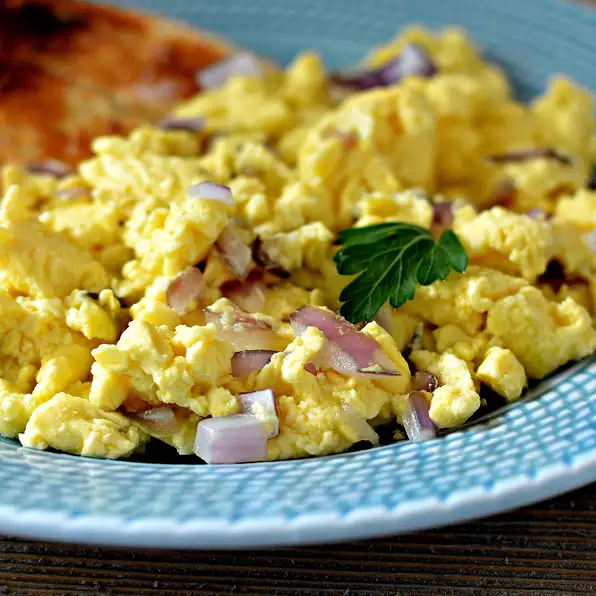

Perfect Scrambled Eggs

The perfect morning booster meal! A blast of protein and deliciousness.
Come join us in making this incredible dish!
Ingredients
- 1.5 tablespoons milk
- 6 eggs
- 0.5 cup minced onion
- 0.5 teaspoon black pepper
- 0.5 teaspoon salt
- 1.5 teaspoons butter
Directions
- Whisk together the eggs, milk, onions, salt, and pepper in a large bowl until it looks slightly fluffy.
- Melt the butter in a large pan over medium to high heat; coat the pan evenly with the butter. Stir in eggs and continue stirring until they have just cooked. Serve immediately.
Nutrition Facts
Serving Size (1.5cups)
- 177 calories
- 13g protein
- 4g carbs
- 12g fats
- 550mg sodium
Return Home